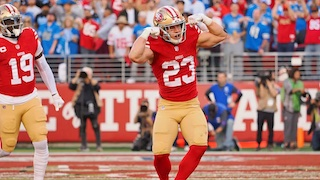

A league winner is a player who either performed average draft spot. Another example is someone who was picked up off the waiver wire and found themselves into a starting lineup. For example, Christian McCaffrey was not a league winner this year due to him battling injuries all season long. An example of a league winner was Saquan Barkley who was drafted late first round or early second round, but finished as RB2.
The top league winner for the wide reciever position was Tee Higgins who was picked as WR28, but finished as WR2 in points per game. For tight end, it was Jonnu Smith who was a waiver wire pick up for most, but finished the season at TE4. At quarter back, Baker Mayfield is considered a league winner due to his performance in the fantasy playoffs where he was the QB5, QB6, QB2 in those weeks. Lastly, the best defense of all of fantasy football was the Denver Broncos averaging almost 10 points a week.
| Postion | Name |
|---|---|
| Quarterback | Lamar Jackson |
| Runningback | Saquan Barkley |
| Wide reciever | Ja'Marr Chase |
| Tight end | George Kittle |
| Kicker | Austin Seibert |
| Defense/Special teams | Denver Broncos |